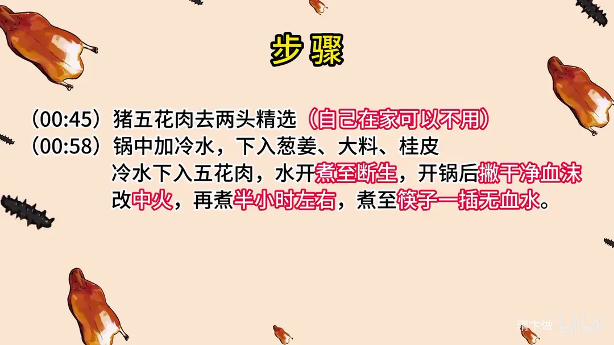
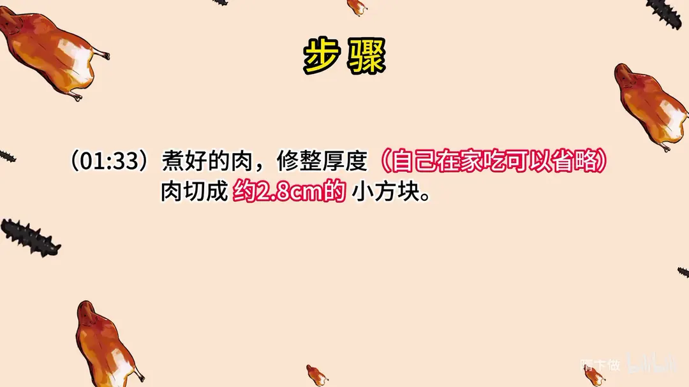
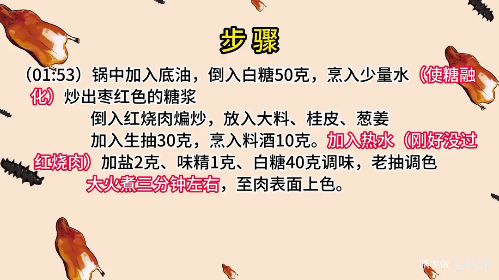
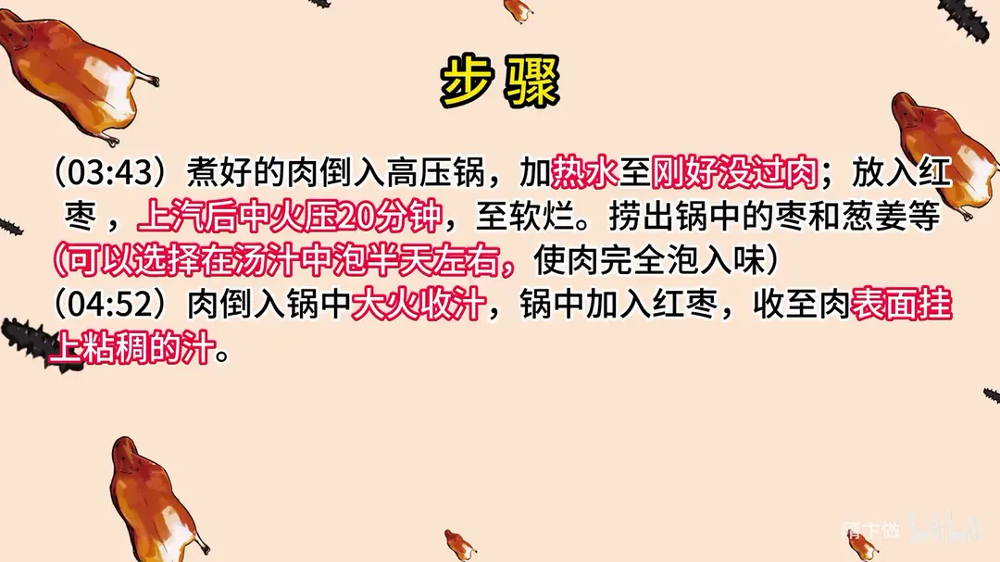

枣香红烧肉
隋卞一做。五花肉冷水下锅煮至断生，切成约 2.8cm 方块，白糖炒出枣红糖色，加热水与红枣高压锅压二十分钟，最后大火收汁挂汁。
原视频：https://www.bilibili.com/video/BV198411S7LW
食材
五花肉、红枣、白糖 等 12 样
| 类别 | 用料 | 用量 |
|---|---|---|
| 主料 | 五花肉 | 适量 |
| 配料 | 红枣 | 适量 |
| 糖色 | 白糖 | 50g |
| 调料 | 生抽 | 30g |
| 调料 | 老抽 | 适量 |
| 香料 | 大料瓣 | 适量 |
| 香料 | 桂皮 | 适量 |
| 香料 | 葱姜 | 适量 |
| 调料 | 料酒 | 10g |
| 调料 | 盐 | 2g |
| 调料 | 味精 | 1g |
| 调料 | 白糖 | 40g |
步骤
- 修整五花肉：猪五花肉去两头精选，自己在家可以不用。
- 煮肉：锅中加冷水，下入葱姜、大料、桂皮；冷水下入五花肉，水开煮至断生，开锅后撇干净血沫；改中火，再煮半小时左右，煮至筷子一插无血水。
- 切块：煮好的肉修整厚度，自己在家吃可以省略；肉切成约 2.8cm 的小方块。
- 炒糖色：锅中加入底油，倒入白糖 50 克，烹入少量水使糖融化，炒出枣红色的糖浆。
- 煸炒调味：倒入红烧肉煸炒，放入大料、桂皮、葱姜；加入生抽 30 克，烹入料酒 10 克，加入热水刚好没过红烧肉；加盐 2 克、味精 1 克、白糖 40 克调味，老抽调色，大火煮三分钟左右，至肉表面上色。
- 高压：煮好的肉倒入高压锅，加热水至刚好没过肉；放入红枣，上汽后中火压 20 分钟，至软烂。捞出锅中的枣和葱姜等，可以选择在汤汁中泡半天左右，使肉完全泡入味。
- 收汁：肉倒入锅中大火收汁，锅中加入红枣，收至肉表面挂上黏稠的汁。
讲解要点
难度：★★★☆☆（流程长，难点是炒糖色的火候和收汁的黏度）
为什么这么做
- 只取正经五花三层：边上那块和通脊下的小块都去掉，层次分明的五花炖完才糯，肥瘦不容易脱开。
- 先整块冷水下锅煮：一是定型，切出来方正；二是去腥，血沫打干净；煮到筷子一插无血水就断生了。
- 切 2.8cm 的大块：块小了炖完就缩没了，大块吃着才过瘾。
- 炒糖色先大火后小火：糖刚化时火大没问题，一变浅黄就要关小火，因为从浅黄到枣红变化非常快，火大了会苦。
- 糖色有两个作用：给肉皮上色，旺火收汁时还有一定黏性，汁能挂得住。
- 趁煸肉时把生抽放进去：酱香味会和糖色融合、没有焦糊味；糖色单靠炒很难达到店里那种深枣红，所以要补老抽。
- 加热水不添冷水：冷水会让刚煸紧的肉骤缩发柴。
- 上汽后转中火压 20 分钟：保持压力，肉软而不散；不着急吃就泡半天，酒店也是做好后放一夜再走菜。
- 收汁前把枣、大料、葱姜捞出来：不捞，一收汁全碎了；收汁时尽量别让皮朝下，容易扒锅。
容易翻车
- 桂皮千万不能多放，一小块就够，多了压味。
- 炒糖色一变浅黄就要减火，颜色过深就发苦。
- 补水量一定要加热水，加冷水肉会发柴。
- 收汁要大火熬到黏稠、肉表面挂上汁再关火，颜色红亮就够了。
- 尝味前先漱口，刚喝完含糖饮料就尝，会把肉的甜味盖过去。
原片尾卡




原片文案
AI 字幕校准稿
前段时间我们教了一个甜咸口的红烧肉，南方的小伙伴红了，说我们要吃甜口的，我们这就是甜口的。今天就教你们一个甜口的，而且这个甜口的跟一般的还不太一样，我们往里边加了大枣。这个就是我们在那家小馆吃的那个枣香红烧肉，一个甜咸口的汁，五花肉炖得绵软烂，回口有一点点枣的香味和料酒的香味。
一直有国外的同学说，在国外买的猪肉特别腥，如果腥的话，用大量的葱姜水去泡一泡，把异味全都漂干净了，应该就没事了。
猪五花肉，把边上那块去掉，猪通脊下面那小块就不要了，做红烧肉只用这一块正经的五花三层。锅里边放上干净水，葱姜放进去，放上三个大料瓣，来上一块桂皮——桂皮千万不能放多。把肉放里面煮，这个步骤有两个目的：一个是定型，一个是去腥。有血沫的话把血沫打了，把盖盖上，中火煮上一会儿。到时间了，都冒香味了，可以了。
煮好的肉要片一刀，自己在家吃就不用了，给它切得稍微大一点，吃着过瘾，大约 2.8 厘米的块。切好之后炖红烧肉，锅洗干净，里边放上底油，不容易粘锅。
倒入白糖，少放点水让糖融化，刚开始全程大火没问题，变浅黄了就要关小火，这会儿变化就比较快了。炒糖色有两个作用：一可以使肉表皮上色，第二在旺火收汁的时候也有一定的黏性。看着啊，瞬间就要变，浅枣红色这个色就可以了。
切好的五花肉块直接煸一下，因为我们煮过的肉表皮水分很多，所以在煸炒的同时失去水分，然后把糖色慢慢渗进去。两个大料、一块桂皮、葱姜都可以放进去了，然后加入酱油——一般说酱油都是指的生抽。这会儿加酱油，它会跟糖色的味道融合到一块，就没有焦糊味了。加酱油这一步，零几年的时候做出来的红烧肉教程味道很重很重，后来我就改了：煸肉的同时把酱油放进去，这里面的焦糖色的味道就没有那么重了。
然后放入料酒，加水了，这个一定要加热水，补点糖、补一点老抽。你记不记得我们吃的时候，汁的颜色是深枣红色，单靠炒糖色是不行的。大火煮个两三分钟，这肉表面上色了就可以了。
倒进高压锅，红烧肉还放枣的。炒糖色有点淡淡的焦糖甜，刚才又放了点糖，再加上点枣，整体的味道融为一体了。上气之后关中火压 20 分钟。
如果家里人不着急吃，咱们多泡一会儿，泡半天，把味道全泡进去。其实酒店也这样，做好了之后也得放一夜，第二天走菜的时候再一起加热，一收汁就可以上了。
我们要把里面的枣、大料、葱姜都给捡出来，你要不捡出来，一收汁全碎了。把肉倒到锅里面收汁，尽量不要让它皮朝下，皮朝下容易扒锅。一直大火收汁，把汁熬到黏稠，看这个肉挂上汁了、肉上有色了、红的，就关火，装砂锅。
肉一进嘴里就化掉了，肥肉是特别浓郁的脂肪的香味，还有枣的那种清甜和枣的香味。这个肉我拿起来一块给你们看，它是透明的、透亮了。我也不是爱吃甜口的，也不是爱吃咸口的，我就是爱吃好吃的，我就爱吃肉。这种咸口的是我们北方人的口味，南方的小伙伴可以再多加一倍这个甜度，我们在上海一带吃的甜度基本上也差不多，要到无锡可能会真的加一倍。简单好做，家里人所有调料都有，试起来吧。